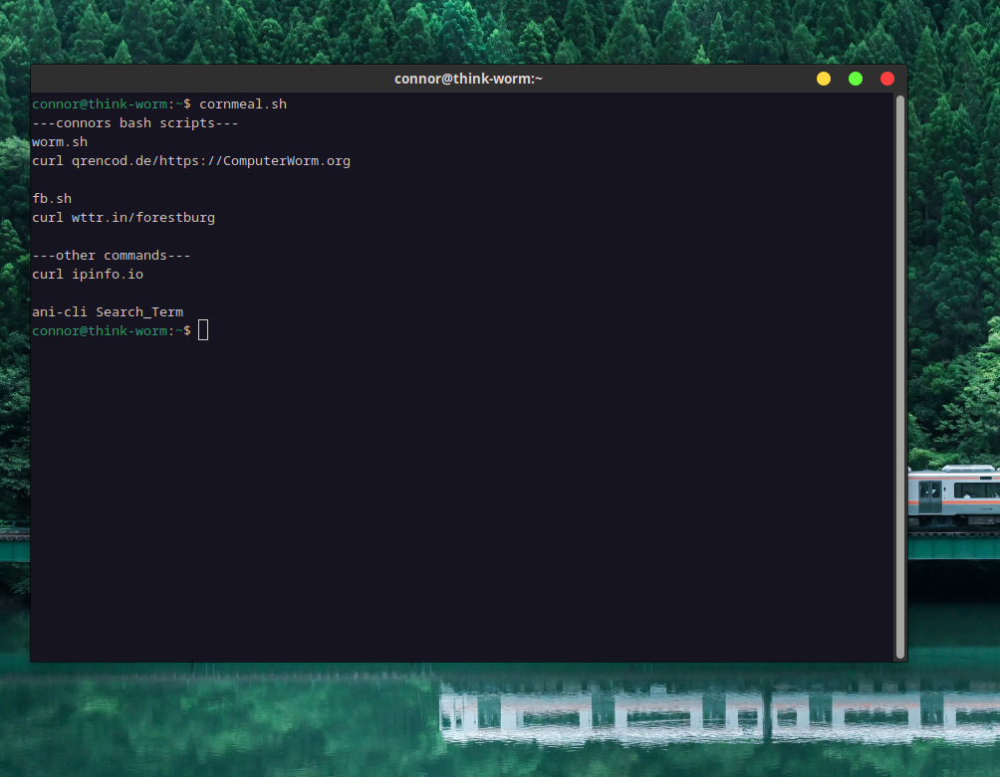
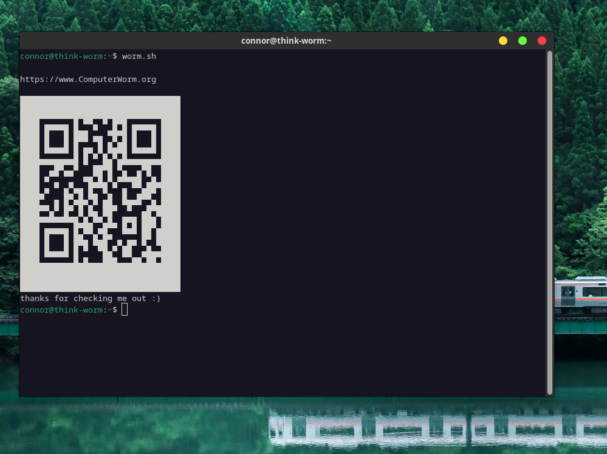
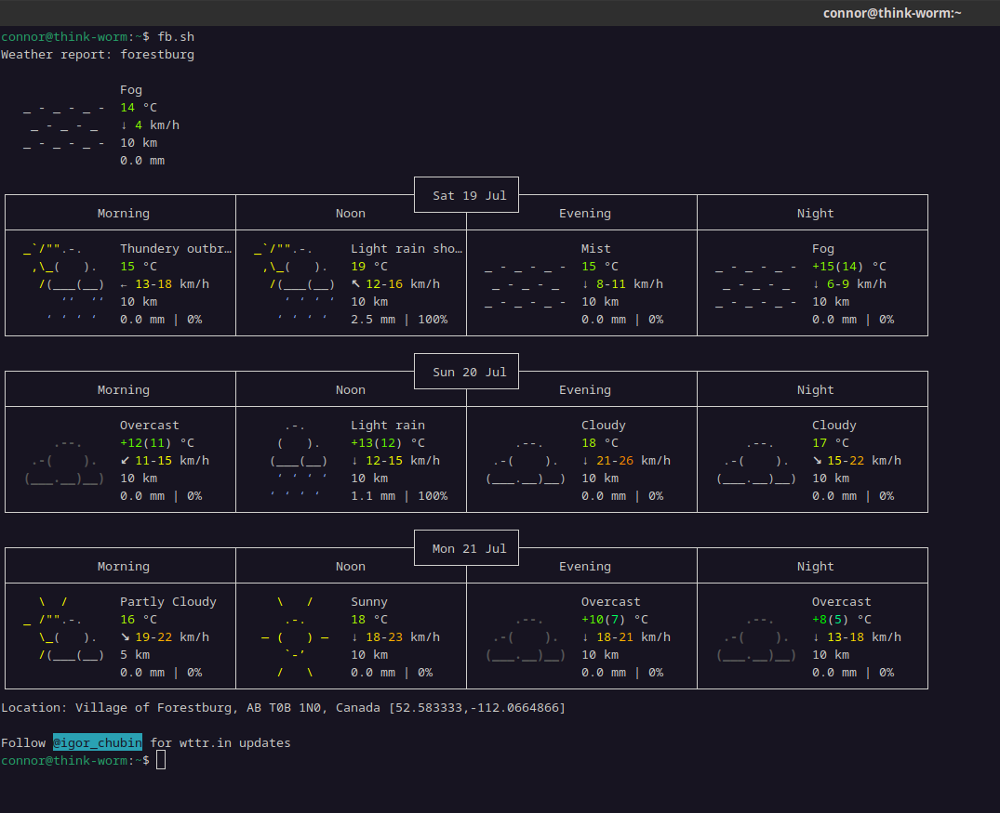

Captains Log 0007
July 20, 2025
Bash + Curl
I spent some time playing around with curl in the terminal and decided to try making bash scripts for the first time for some of the more useful curls
cornmeal.sh
this is just a simple list of my bash scripts I made, I put them all in /usr/local/bin so I can just type their name to launch them and don't have to put ./ infront. Also I can call them from any directory now too which is super cool.

worm.sh
this curls a QR encoder for my website and prints the code to the terminal. Pretty nifty stuff. Don't think I'll use it much but its still cool

fb.sh
This one curls the weather for my village. Probably the most useful of them all

I would love to make some more complex/involved bash scripts to learn more but I'm not entirely sure what I would have them even do.
Something I'm interested in trying to make is a program that I can use for work for determining affected properties during water shut offs, depending on which water main valves are turned. Ideally I would like to
be able to control it through the terminal as well so maybe interact with it using bash? I don't really know. But it would be cool. Have it print # of affected as well as a list of names/phone #/Addresses